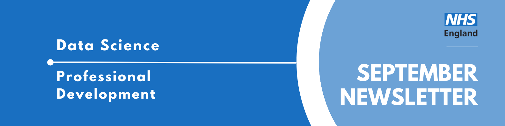

Data Science Community for Health and Care Newsletter September 2025

Welcome to the latest newsletter from the Data Science Community for Health and Care, brought to you by the NHS England Data Science Professional Development Functional Team.
The newsletter team are always happy to receive constructive feedback, and we invite you to send us any contributions you may have.
If you cannot access something of interest to you, please reach out.
Thanks for reading! – newsletter team
Looking for an interesting read?
SpikingBrain Technical Report: Spiking Brain-inspired Large Models
LLM Architecture inspired from Brain-Inspired Mechanisms
Large language models (LLMs) face significant efficiency bottlenecks: training computation scales quadratically with sequence length, and inference memory grows linearly. These constraints limit their ability to process long sequences effectively, and make it more challenging to achieve stable and efficient training and deployment.
This paper delves into these issues and proposes SpikingBrain, a new family of brain-inspired models designed to help combat these challenges. The architecture is based on how biological neurons work in the brain, particularly around their adaptive spiking threshold. This threshold, which can dynamically change, enables event-driven copmutation which can enhance computational efficiency.
Defeating Nondeterminism in LLM Inference
Reproducibility is a bedrock of scientific progress. However, it’s remarkably difficult to get reproducible results out of large language models (LLMs). For example, you might observe that asking ChatGPT the same question multiple times provides different results. However, even when we adjust the temperature down to 0 (that is, the LLM always chooses the highest probability token, which is called greedy sampling), LLM APIs are still not deterministic in practice.
A group from the Thinking Machine Lab dive into what contributes to the non-deterministic behaviour of LLMs and explain how to defeat nondeterminism and obtain truly reproducible results in LLM inference. They prompt an LLM to “tell me about Richard Feynman” and found that when batch-invariant kernels are enabled, all 1000 completions are identical!
Dawn of A New Era of Primary Prevention in Medicine
Recent groundbreaking reports highlight our newfound potential to prevent diseases
Primary Prevention means a disease or condition is averted. Currently, we have secondary prevention in place, for example screening for cancer, which focuses on finding cancer at an early stage. This Ground Truths post is about the new and exciting opportunity for achieving primary prevention, and discusses the profound economic benefit of primary prevention for reducing the cost of treatments. The post references various new papers that have recently come out such as Personal Health Agent, Epigenetic Organ Age Clocks and Continuous Protein Monitoring.
Events
Lots of exciting things coming up! See the full calendar here, and a small selection below.
Leeds Digital Festival
Monday 22nd September - Friday 3rd October, Various times, Mix of Leeds and Online
Immerse yourself in the Leeds digital community at the largest tech event in the North. Leeds Digital Festival is an open, collaborative celebration of digital culture in all its forms, so there’s something for everyone. The two-week-long open-platform returns with 200+ tech events to choose from, and it’s the 10th anniversary!
Each event is free and requires you to book a place.
Below are some highlighted events but there are many more to choose from!
AI for Good in Healthcare: From Theory to Impact (organised by Hedgehog Lab)
Tuesday 30th September, 17:00 - 19:30, KPMG, 1 Sovereign St, Leeds, LS1 4DA
This session showcases where AI is already making a measurable difference in people’s lives. You will hear directly from the people building and deploying AI at scale. Not theorising. Not piloting. Delivering. We are talking NHS diagnostics, vet tech that is shaking up a broken system, and digital transformation that is saving lives, not just budgets. Drinks and food will be provided.
Applied AI (organised by Parallax)
Tuesday 30th September, 18:00 - 20:00, Parallax, The Elbow Rooms, 64 Call Lane, Leeds, LS1 6DT Join us for another Applied AI at Leeds Digital Festival and explore the real-world impact of AI, without the jargon. Applied AI is an evening of thought-provoking talks, live examples, and down-to-earth discussion focused on how AI is being applied today – in teams, in products, and in the everyday decisions we make at work. At this Applied AI, you’ll hear from leading thinkers, tinkerers and makers who are applying AI in meaningful, often surprising ways.
“Demystifying MLOps” and “How should I investigate data?” (organised by Leeds Data Science Meetup)
Tuesday 30th September, 18:00 - 20:00, Platform, New Station St, Leeds LS1 4JB Leeds Data Science Meetup will be holding their September event during Leeds Digital Festival this year. Our regular events cover the cutting-edge work in data science and data engineering that is happening in and around Leeds. You can meet with students, scientists, engineers, and entrepreneurs who are interested in all things Data Science related! This is an exciting time for coders of every type in Leeds, so join us!
In September, we have speakers from both academia and industry. Professor Roy Ruddle (LIDA) will be presenting “How should I investigate data quality?” and Myles Mitchell (Jumping Rivers) will be presenting “Demystifying MLOps”.
Digital Transformation: Developing Smart Solutions for Critical Government Services (organised by Netcompany)
Wednesday 1st October, 08:45 - 10:30, Netcompany UK, 3 Wellington Place, Leeds, LS1 4AP How do you approach building digital systems that are smart, reliable, and designed to serve society? This panel explores the mindset and methodology behind tackling complex digital challenges, from understanding problems to designing smart, sustainable solutions. We’ll discuss the broader impact of these systems – how they support the digitisation of government services and address challenges that affect everyday life. If you’re an aspiring technologist, a natural problem-solver, and want to have a positive impact on government services, join us to learn how you can contribute to meaningful, society-wide digital transformation.
2025: AI is going back to the future… (organised by Oakland)
Thursday 2nd October, 12:45 - 18:30, Flutter UK & Ireland, 4 Wellington Place, Leeds, LS1 4AP
The last year has gone by in the blink of an AI. At our 2024 session, we explored the hype, hope, and hands-on examples of AI in action. But as the dust settles, one truth is becoming increasingly clear: AI can’t deliver on its promise without strong data foundations.
Enter 2025, and organisations are starting to feel the strain: AI projects are stalling, models are drifting, and demonstrating value is becoming increasingly challenging. Why? Because we’ve rushed headlong into the future without checking, we packed the essentials. Good data. Shared language. Trusted processes. Skilled people.
Join The Data Crowd for an unmissable afternoon of exploration, challenge, and connection as we dive into the opportunities (and hard truths) of data and AI in practice.
Whether you’re a data-curious graduate, a data team leader, or a Chief Data Officer shaping strategy at scale, this event will inspire new thinking, offer real-world lessons, and challenge assumptions.
AI in the NHS 2025
Tuesday 14th October, 14:00 - 17:15, Online
With the opportunities for artificial intelligence in health care expanding and new technologies igniting political and media debate, the drive to understand how to effectively and responsibly implement AI in the NHS continues unabated.
At our 2025 event, we’ll hear international perspectives on how to capitalise on AI in healthcare and navigate the challenges of effectively implementing the technology. With the government’s NHS AI strategic roadmap due this autumn, we’ll consider what the UK can learn from these experiences.
Join stakeholders from across the NHS, government, tech industry, investors, academia and the charity sector who are leading the strategic direction, development and implementation of AI and technology in health care.
Privacy is Power - Data Ethics and Society Reading Group
Tuesday 11th November, 12:00 - 13:00, Online,
Wednesday 26th November, 13:00 - 14:00, Online,
Join us at the Data Ethics & Society Reading Group to discuss Privacy is Power by Carissa Véliz.
“Digital technology is stealing our personal data and with it our power to make free choices. To reclaim that power and democracy, we must protect our privacy. Short, terrifying, practical: Privacy is Power highlights the implications of our laid-back attitude to data and sets out how we can take back control.”
We will be holding two sessions over two weeks. The sessions will each focus on a different section of the book- but if you can’t make the one you want to come to, we can still guarantee a great conversation! Read more about our changes in our recent Data in Government blog post.
- Tue 11 Nov 2025 12 PM - 1 PM (focusing on the first half of the book; the dangers the data economy poses and why we should care)
- Wed 26 Nov 2025 1 PM - 2 PM (focusing on the second half of the book; what can we do about it, and whose responsibility is it?)
The event is free, but you need to sign up to reserve your spot. Signups for the first session will close on Monday 3rd November at 6pm. Signups for the second session close on Tuesday 18th November at 6pm.
See more future events on the calendar
Know of any events we should feature next month? Let us know by clicking the “Contribute” button, or here.
Check out our collection of training resources in the Resources Section! Can you spot something missing? Contact us!